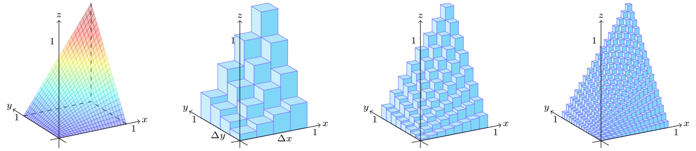

Table of Contents
Multivariable Calculus

NARROW DISPLAY WARNING
You are most likely using a tablet or mobile device in portrait orientation. This website is best viewed using a typical computer screen with the browser window maximized.
Viewing this website in portrait orientation can cause problems with equations being longer than the screen width (you can scroll to the right), images being poorly sized, and the font size of maths text being much smaller than regular text. If your only option is a tablet or mobile device, your viewing experience will be better if you view this website in landscape orientation. You might need to refresh the page to fix any problems after rotating.
Double integrals can be used to find areas of regions in the $xy$-plane and volumes. If a density is defined for a region in the $xy$-plane, the mass, moments, center of mass, and moment of inertia can be calculated.
Double integrals are still defined as Riemann sums, but now over a bounded area instead of a line. Here's an example.
\begin{equation} \int_{0}^{1} \int_{0}^{1} xy \text{ d}y\text{d}x = \lim_{m,n \rightarrow \infty} \sum_{i=1}^{n} \sum_{j=1}^{m} x_{i}y_{j} ~\Delta x \Delta y \quad \Delta x = \frac{1}{n} \quad \Delta y = \frac{1}{m} \end{equation}For larger values of $m$ and $n$, the Riemann sum of the volume of many rectangular prisms with base area $\Delta x \Delta y$ and height specified by the integrand becomes a better approximation to the volume under the surface.
This one can be evaluated fairly easily using the formula for,
\begin{equation} \sum_{i=k}^{N} k = 1 + 2 + \cdots + N = \frac{N(N+1)}{2} \end{equation}Ignoring the limits for a moment,
\begin{align} \sum_{i=1}^{n} \sum_{j=1}^{m} x_{i}y_{j} ~\Delta x \Delta y &= \sum_{i=1}^{n} \sum_{j=1}^{m} \frac{i}{n}\frac{j}{m}\frac{1}{n}\frac{1}{m} \\ &= \frac{1}{n^{2}}\frac{1}{m^{2}} \left(\sum_{i=1}^{n} i\right) \left(\sum_{j=1}^{m} j\right) &= \frac{1}{n^{2}}\frac{1}{m^{2}} \frac{n(n+1)}{2} \frac{m(m+1)}{2} \\ &= \frac{n^{2}+n}{2n^{2}} \frac{m^{2}+m}{2m^{2}} \\ &= \left(\frac{1}{2}+\frac{1}{2n}\right)\left(\frac{1}{2}+\frac{1}{2m}\right) \\ \end{align}Now evaluating the limits,
\begin{align} \int_{0}^{1} \int_{0}^{1} xy \text{ d}y\text{d}x &= \lim_{m,n \rightarrow \infty} \sum_{i=1}^{n} \sum_{j=1}^{m} x_{i}y_{j} ~\Delta x \Delta y \\ &= \lim_{m,n \rightarrow \infty} \left(\frac{1}{2}+\frac{1}{2n}\right)\left(\frac{1}{2}+\frac{1}{2m}\right) \\ &= \left(\frac{1}{2}+0\right)\left(\frac{1}{2}+0\right) = \frac{1}{4} \end{align}There's nothing particularly special about evaluating a double integral vs. evaluating a single integral. The interior integral is evaluated first, which creates a new integrand. Then the exterior integral is evaluated.
\begin{align} \int_{0}^{1} \int_{0}^{1} xy \text{ d}y\text{d}x &= \int_{0}^{1} \left[ x\frac{1}{2}y^{2} \right]_{y=0}^{y=1} \text{d}x \\ &= \int_{0}^{1} \frac{1}{2}x \text{ d}x \\ &= \int_{0}^{1} \left[ \frac{1}{4}x^{2} \right]_{x=0}^{x=1} \text{d}x \\ &= \frac{1}{4} \end{align}The difficulty in double integrals is actually in creating the bounds because the interior integral bounds can now have variables in them.
Create the integral bounds for the $\text{d}x\text{d}y$ and $\text{d}y\text{d}x$ integral orders for the triangle with vertices $(0,0)$, $(2,0)$, and $(2,3)$.
Create the integral bounds for the $\text{d}x\text{d}y$ and $\text{d}y\text{d}x$ integral orders for the triangle with vertices $(0,1)$, $(0.5)$, and $(4,3)$.
Create the integral bounds for the $\text{d}x\text{d}y$ and $\text{d}y\text{d}x$ integral orders for the following region.
\begin{equation} y = x^{2} \qquad y = x \qquad 0 \leq y \leq 4 \end{equation}